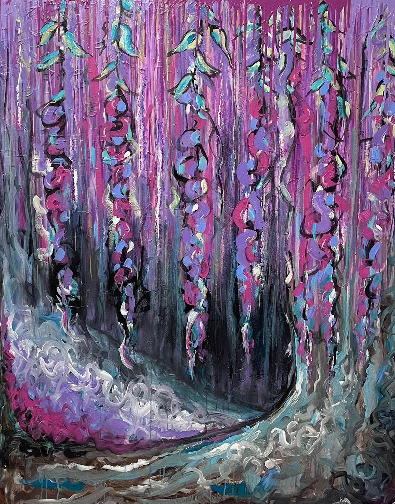
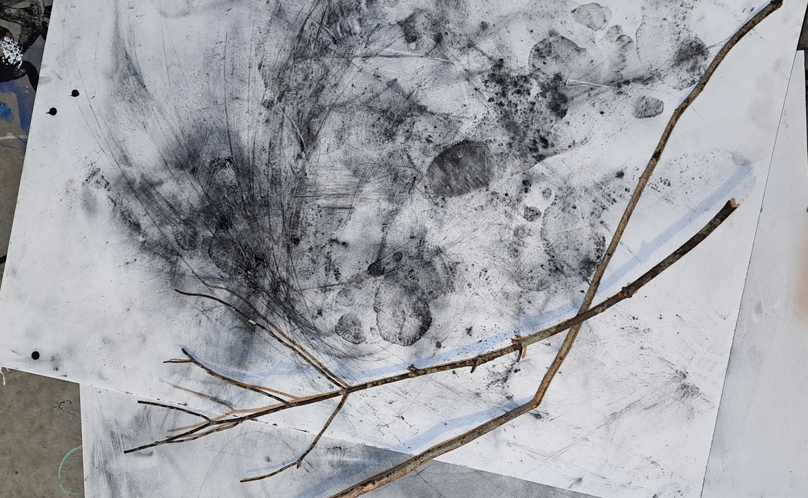

Art, writing, and hands-on learning informed by place, myth, and matter.

Upcoming Workshop
A study of body movement, materials, and intuitive mark-making with eco-materials
Reserve your spotAbout Kate
My work is a dialogue with land, material, and the more-than-human world. Through art, writing, and teaching, I explore how we belong, how we remember, and how we live more intentionally on this earth.
Learn more about KateRecent Writing
Read all essaysOn creativity, reciprocity, and the slow work of relationship.
Notes on Deleuze, ecology, and becoming.
Time, erosion, and the stories written in stone.